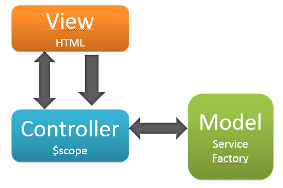
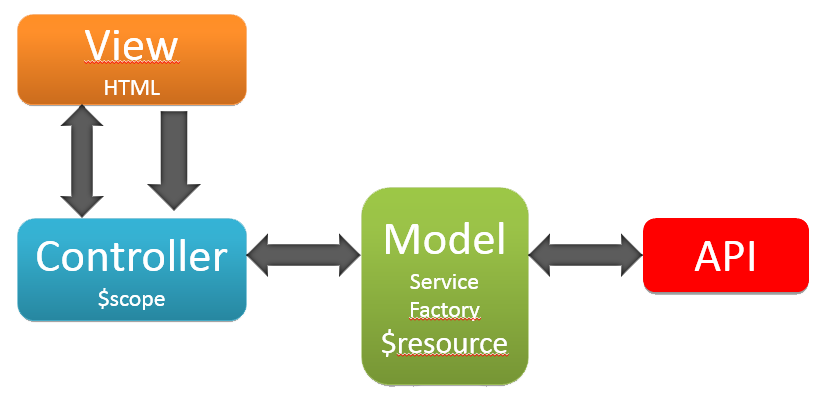
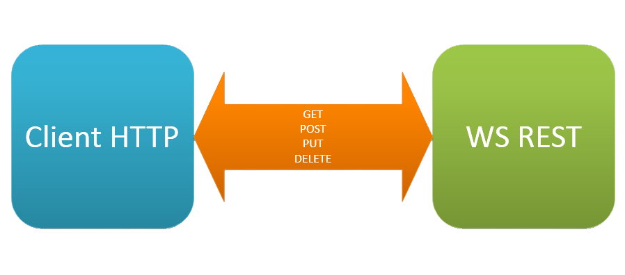

AngularJS et Les web services REST
Présenté par:Larbi Jirari & Zied Zaïem
https://github.com/ziedzaiem/angular-rest
- Introduction
- AngularJS et les WS REST
- Démonstration Technique

Superheroic JavaScript
MVW Framework
Model-View-Whatever *whatever works for you

L’injection de dépendances est un design pattern logiciel qui traite la façon dont les composants gèrent leurs dépendances.
someModule.controller('MyController', ['$scope', 'dep1', 'dep2', function($scope, dep1, dep2) {
$scope.aMethod = function() {
...
}
}]);
| Services | Factory |
|
|


AJAX
- XMLHttpRequest
- jQuery.ajax()
- $http
$resource
A factory which creates a resource object that lets you interact with RESTful server-side data sources.
var User = $resource('/user/:userId', {userId:'@id'});
var user = User.get({userId:123}, function() {
user.abc = true;
user.$save();
});
Sécurité
- Cookies Vs Tokens
- https://auth0.com/blog/2014/01/07/angularjs-authentication-with-cookies-vs-token/
- JSON Web Token (JWT)